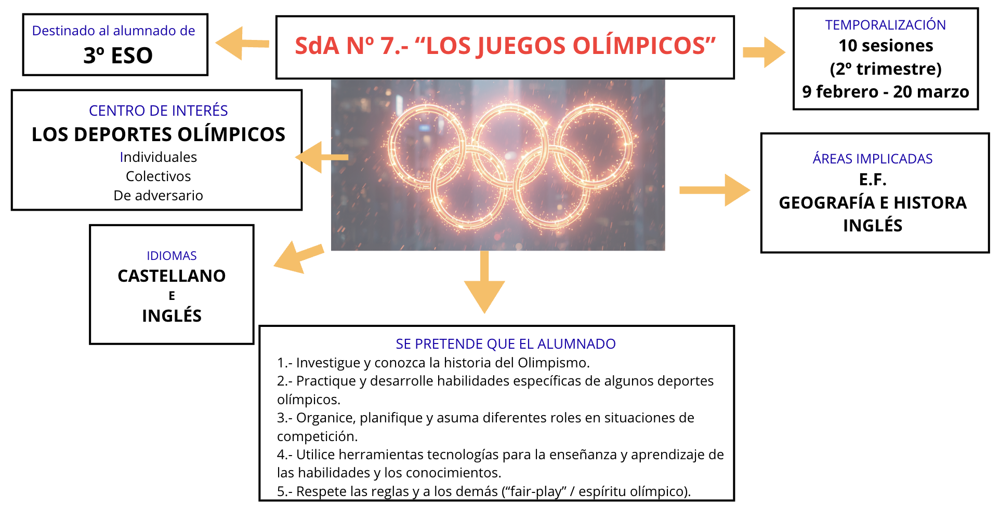

JJOO EL MAJUELO 2026
¡Hola de nuevo, chicos y chicas!
¡Volvemos a la carga! Y ahora, con una motivante situación de aprendizaje que os va a encantar, ya que tendréis la oportunidad de ser deportistas de élite y entrenadores/as al mismo tiempo. ¿Alguna vez habéis soñado con asistir a unos Juegos Olímpicos? ¿Sí? Pues esta es vuestra oportunidad.
En esta Situación de Aprendizaje vamos a aprender cosas muy interesantes sobre los Juegos Olímpicos (historia, precursores, deportes, atletas, movimiento olímpico, etc), a través de un proceso de investigación y de creación de contenidos (infografía y video), al mismo tiempo que deberéis participar activamente en los distintos deportes y dirigir/enseñar al resto de compañeros el deporte que haya elegido tu grupo.
¡Va a ser muy divertido! ¡No os lo perdáis!
A continuación os dejo una infografía sobre los aspectos más importantes de este proyecto.
